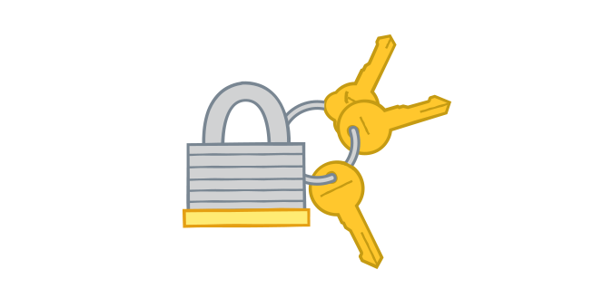
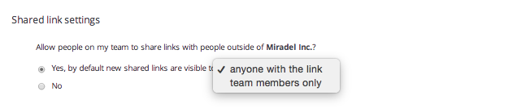

Configure sharing settings
Set default sharing permissions for your entire team from within the Admin Console.
If your team works on lots of sensitive materials, you can set default rules about whether or not team members can share work outside the team. These rules will apply to everyone on your Business account.
Key Points:
- These rules will apply to everyone on your Business account
- If you allow folder sharing with people outside the team, your team can still designate individual folders as team-only.
- If you allow link sharing with people outside the team, you can still control the default settings on new shared links.
Choosing default settings for new shared folders and links

To manage team-wide sharing permissions, just follow these steps:
- Sign in to Dropbox with your admin account and click on Admin Console in the left-hand sidebar.
- Click on the Sharing tab on the left-hand side of the page and then answer the following questions:
- Under "Shared folder settings," answer Yes or No to the following questions:
- Allow people on my team to share folders outside of [ your team's name]?
- Allow people on my team to join shared folders outside of [your team's name]? These folders aren't subject to your team settings.
- Under "Shared link settings," answer Yes or No to the following question:
- Allow people on my team to share links with people outside of [your team's name]?
- If yes, choose the default access level for new shared links: will newly created links be accessible by anyone with the link unless manually changed, or the other way around?

Have more questions? Check out these helpful articles:
- ? How do I prevent members from sharing files outside our team?
Was this article helpful?
:) Yes
:( No
← Previous
Next →